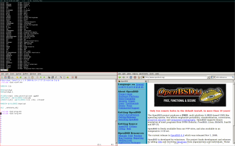
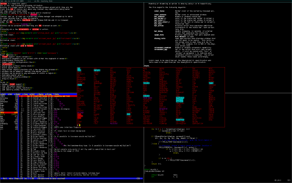
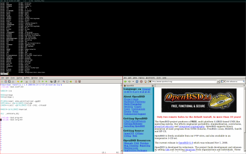
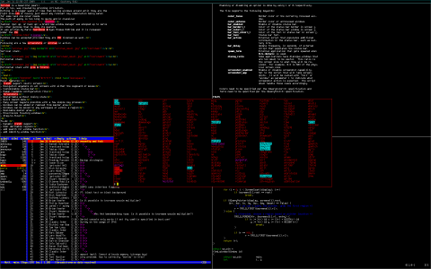

Stack verticale.
![[torba2]](torba2.jpg)
Stack orizzontale.

Stack orizzontale con gvim & Firefox.
{kind=link}

Stack verticale con una finestra floating e una finestra in più
nell'area principale.
{kind=link}
![[torba5]](torba5.jpg)
Mplayer, ridimensionato e spostato.
In English En Español Em Português In Russian
Torba è un piccolo gestore di finestre tiling dinamico per X11. Cerca di stare in disparte, in modo che il prezioso spazio sullo schermo possa essere usato per cose più importanti. Ha dei default sensati e non costringe l'utente ad imparare un linguaggio di programmazione per configurarlo. È stato scritto dagli hacker per gli hacker e cerca di essere piccolo, compatto e veloce.
È stato ispirato in buona parte da xmonad e dwm. Entrambi sono ottimi programmi ma soffrono di cose come: sindrome–del–folle–linguaggio–non–portabile, default insensati, layout asimmetrico delle finestre, "quanto potrà mai essere difficile?" e buon vecchio NIQ. Nonostante questo, dwm si è rivelata una risorsa fenomenale, e una gran quantità di buone idee e codice sono state prese in prestito da lì. Dalla sua parte xmonad ha degli ottimi default, scorciatoie da tastiera e supporto a xinerama, ma è svantaggiato dal fatto di non essere scritto in C.
Torba è una meravigliosa perla!
Perché anch'esso è stato creato da grande irritazione.
Non esistono perdite di tempo maggiori del dover spostare continuamente le
finestre finché non sono pressapoco della dimensione giusta, o del
trovarsi con praticamente ogni combinazione di tasti sensata già
occupata da una qualche funzione che non tornerà mai utile.
Questo percorso di agonia è troppo lungo da descrivere, quindi in
classico stile
OpenBSD
(sopporta, oppure modifica) è stato creato un nuovo gestore di
finestre, che non ha altro scopo al di fuori dell'ubbidire ai propri maestri.
È stato scritto da Marco Peereboom, Ryan Thomas McBride & Darrin
Chandler ed è rilasciato secondo i termini della
licenza
ISC.
Eventuali patch possono essere accettate a condizione che anche esse usino
la licenza ISC.
Qui sotto ci sono alcuni screenshot di torba in azione.
Stack orizzontale.

Stack orizzontale con gvim & Firefox.

Stack verticale con una finestra floating e una finestra in più
nell'area principale.
Mplayer, ridimensionato e spostato.
Funzionalità principali:
- Supporto per xrandr & xinerama (schermi multipli) dinamici
- Spostamenti ovunque, su tutti gli schermi, sia usando la tastiera che il
mouse
- Barra dello stato personalizzabile
- File di configurazione comprensibile da un essere umano
- Screenshots
- Riavviabile senza perdere lo stato
- Menu d'avvio veloce
- Numerosi layout dello schermo possibili con poche semplici combinazioni
da tastiera
- Le finestre possono essere aggiunte o rimosse dall'area principale
- Le finestre possono essere spostate in qualsiasi area di lavoro o
all'interno di una regione
- Area principale ridimensionabile
- Spostare/ridimensionare le finestre floating
- Trascina–per–rendere–floating
- Regioni definibili dall'utente
- Tasto modificatore e scorciatoie definibili dall'utente
- "Quirk" definibili dall'utente
- Combinazioni per lanciare applicazioni definibili dall'utente
Non ancora implementate:
- Aggiungere la possibilità di cercare una finestra
- Aggiungere la possibilità di identificare una finestra
- Passare da Xlib a XCB
- Fare sì che le finestre floating ricordino la propria posizione
quando lo schermo viene ridisegnato
- Implementare un meccanismo di stacking delle finestre floading
Bug conosciuti:
- Nessuno, al momento.
Ci si può riferire alla pagina di manuale per una spiegazione più dettagliata.
All community resources are hosted by Conformal Systems and can be found at:
Copyright (c) 2009 Marco Peereboom <marco@peereboom.us>,
Ryan Thomas McBride <mcbride@countersiege.com> &
Darrin Chandler <dwchandler@stilyagin.com>
Mirrors:
Main site
Argentinian mirror
American mirror
$torba: torba_it.html,v 1.5 2010/09/16 02:42:21 marco Exp $